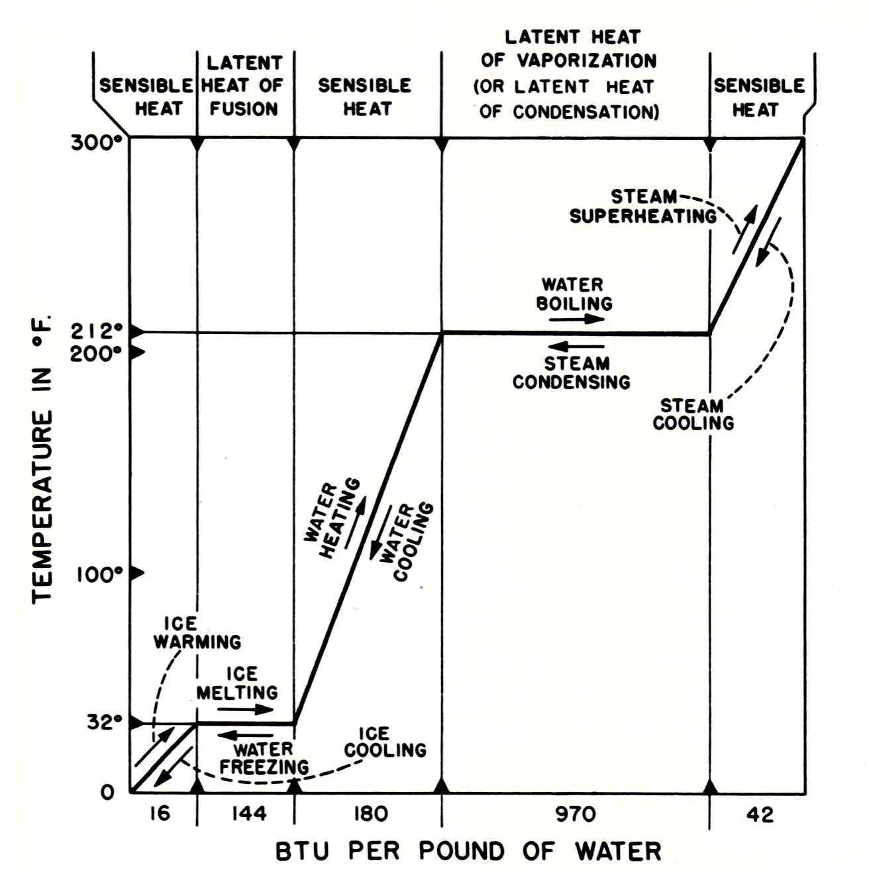

Subsection 4.3.2 Thermal Energy
All substances are composed of molecules. The energy associated with molecules is called thermal energy. Thermal energy, like mechanical energy, exists in two stored forms and in one transitional form. The two stored forms of thermal energy are called internal potential energy, and internal kinetic energy. Thermal energy in transition is called heat.Although molecules are too small to be seen, they behave in some ways pretty much like the larger objects we considered in the discussion of mechanical energy. Molecules have energy of position (internal potential energy) because of the forces which attract molecules to each other. In this way, they are somewhat like the rock and the earth we considered before. Molecules have energy of motion (internal kinetic energy) because they are constantly in motion. Thus, the two stored forms of thermal energy-internal potential energy and internal kinetic energy-are in some ways similar to mechanical potential energy and mechanical kinetic energy, except that everything is on a smaller scale.
Subsubsection Temperature
You are probably already familiar with temperature, and know that we use is it to describe how hot or cold an object is, but what, exactly is it? Temperature is not energy and it’s not heat. It is simply a number related to the average kinetic energy of the molecules of a substance; the greater the average kinetic energy, the greater the temperature. Notice that temperature is not equal to the kinetic energy, just proportional to it, and temperature readings do not tell you anything directly about the potential energy of the substance.
Temperature can be measured in a variety of scales. When the temperature scale is measured up from the point where there is no molecular motion, it is known as an absolute scale, and is directly proportional to the average kinetic energy of the molecules in the substance. The Kelvin and Rankine scales are absolute scales. We normally use the Fahrenheit or Celsius scales, which are offset from the corresponding absolute scale, and so are only indirectly related to the kinetic energy.
Subsubsection Internal Energy
Although the term may be unfamiliar to you, you probably know more about internal energy than you realize. Because molecules are constantly in motion, they exert a pressure on the walls of the pipe, boiler, cylinder, or other object in which they are contained. Also, the temperature of any substance arises from, and is directly proportional to, the activity of the molecules. Therefore, every time you read thermometers and pressure gages you are finding out something about the amount of internal energy contained in the substance. High pressures and temperatures indicate that the molecules are moving rapidly and that the substance therefore has a lot of internal energy.
For most purposes, we will not need to distinguish between the two stored forms of thermal energy. Therefore, instead of referring to internal potential energy and internal kinetic energy, from now on we will simply use the term “internal energy.” By internal energy, then, we will mean the sum total of all internal energy stored in the substance or system because of the motion of the molecules and because of the forces of attraction between molecules.
Subsubsection Heat
Heat is a more familiar term than internal energy, but may actually be more difficult to define correctly. The important thing to remember is that heat is thermal energy in transition - that is, it is thermal energy that is moving from one substance or system to another.
An example will help to illustrate the difference between heat and internal energy. Suppose there are two equal lengths of pipe made of identical materials and containing steam at the same pressure and temperature. One pipe is well insulated; the other is not insulated at all. From everyday experience you know that more heat will flow from the uninsulated pipe than from the insulated pipe. When the two pipes are first filled with steam, the steam in one pipe contains exactly as much internal energy as the steam in the other pipe. We know this is true because the two pipes contain equal volumes of steam at the same pressure and at the same temperature. After a few minutes, the steam in the uninsulated pipe will contain much less internal energy than the steam in the insulated pipe, as we can tell by measuring the pressure and the temperature of the steam in each pipe. What has happened? Stored thermal energy - internal energy - has moved from one system to another, first from the steam to the pipe, then from the uninsulated pipe to the air. This movement or flow of thermal energy from one system to another is called heat.
A good deal of confusion exists concerning the use of the word “heat.” For example, you will hear people say that a hot object “contains” a lot of heat when they really mean that it contains a lot of internal energy. Or you will hear that heat is “added to” or “removed from” a substance. Since heat is the flow of thermal energy, it can no more be added to a substance than the flow of water could be added to a river. (You might add water, and this addition might increase the flow; but you could hardly say that you had added flow.) The only kind of thermal energy that can in any sense be added to or removed from a substance is internal energy. The distinction between heat and internal energy must be clear in your own mind before you can understand the basic principles of a steam plant. Remember, steam contains internal energy but it does not “contain heat.” Heat exists when the internal energy flows from the steam to something else (another substance or system).
Subsubsection Enthalpy
When discussing a system involving work and heat, such as a boiler and turbine, you may hear the term enthalpy. Enthalpy is a thermodynamic quantity defined as the sum of internal energy and the work done by the substance to move its surroundings out of the way as it moves or expands, known as “flow work.” One consequence of this definition is that when heat flows into a substance at constant pressure, its enthalpy increases by the amount of heat energy added. This is why enthalpy is sometimes described as the “heat content” of a substance. Remember that heat is energy in transition, and is never stored so no substance ever really “contains” heat.
Subsubsection Units of Measurement
In engineering, temperature is commonly measured in degrees Fahrenheit. In this scale, the boiling point of water at atmospheric pressure is designated 212°, and the freezing point is 32° with 180 equal degrees between. When working in the metric system, the Celsius scale is used. The Celsius scale (sometimes called the centigrade scale) uses zero as the freezing point of water and 100° as its boiling point, with 100 equal divisions or degrees between.
To convert from Celsius to Fahrenheit: multiply by 1.8 and add 32.
\begin{equation*}
°\mathrm{F} = (1.8 \times °\mathrm{C}) + 32°
\end{equation*}
The British thermal unit (BTU) is used to measure heat. Originally, 1 BTU was defined as the quantity of energy required to raise the temperature of 1 pound of water through 1° on the Fahrenheit (F) scale. A similar unit called the calorie (cal) was originally defined as the quantity of heat required to raise the temperature of 1 gram of water through 1° on the Celsius (C) scale. The BTU and calorie are still in use, but the original definitions have been abandoned by international agreement. These units are now defined in terms of the unit of energy called the “joule.” By definition, 1 BTU is equal to 1054.886 joules, and 1 cal is equal to 4.18605 joules. As may be seen, the BTU is a much larger unit than the calorie; 1 BTU is equal to approximately 252 cal.
Subsubsection Heat Transfer
Heat can flow from one substance to another only when a temperature difference exists. Heat flow can occur only from a higher temperature to a lower temperature. When two objects at different temperatures are placed in contact with each other (or near each other), heat flows from the warmer object to the cooler one until both are at the same temperature. Heat transfer occurs at a faster rate when there is a larger temperature difference between the two objects. As the temperature difference approaches zero, the rate of heat transfer approaches zero.
Conduction, radiation, and convection are usually considered to be the three methods by which heat transfer can occur. It is more accurate, however, to consider conduction and radiation as the two basic methods of heat transfer and to consider convection separately as a special process which involves movement within a mass of fluid.
Conduction.
Conduction is the method by which heat flows from a hotter to a colder substance when there is physical contact between the two substances. For example, consider a cold metal bar which is held firmly against a piece of red-hot metal. In a short time, the end of the bar which is not touching the hotter metal will have become too hot to hold. We say that heat has been conducted from molecule to molecule, throughout the entire bar. The process of conduction will continue as long as there is a temperature difference between the two ends of the bar.
Radiation.
Radiation is a mode of heat transfer that does not require any physical contact between the warmer substance and the cooler substance. For example, a person sitting near a hot stove is warmed by radiant heat even though the air between the person and the stove may remain cold. Similarly, radiant heat from the sun warms the earth without warming the space through which it passes.
Convection.
At the molecular or sub-molecular level, heat transfer takes place through both the processes of conduction and radiation. If we use the term “heat transfer” in a somewhat different way, we may also include convection as a mode of heat transfer. However, it is important to understand the difference between convection and the basic heat transfer processes of conduction and radiation.
If we put a hot brick into a wheelbarrow and wheel it across the street, we have in one sense “transferred” heat. However, any heat transfer that takes place between the brick and its surroundings while we are wheeling it across the street will be by conduction and by radiation. Therefore, it would really be more accurate to say that we have “transported” the brick and all its contained thermal energy from one side of the street to the other.
Convection occurs only in fluids – liquids, gases, and vapors – not in solids, such as the brick we have just transported in the wheelbarrow. Convection is the transportation or movement of some portions of a fluid within the total mass of the fluid. As this movement occurs, the moving portions of the fluid transfer their contained thermal energy from one part of the fluid to another. The effect of convection is thus to mix the various portions of the fluid; the part that was at the bottom of the container may move to the top, or the part that was at one side may move to the other side. As this mixing takes place, heat transfer occurs from one part of the fluid to another and between the fluid and its surroundings. But this heat transfer, like any other heat transfer, takes place by conduction and by radiation. In other words, convection transports portions of the fluid; conduction and radiation transfer the thermal energy.
Convection serves a vital purpose in bringing the different parts of the fluid into close contact so that heat transfer can occur. Without convection, there can be little heat transfer from or within fluids. Most fluids are poor conductors of heat when they are not in motion.
What causes this transportation of a mass of fluid? In the case of natural convection, the movement is caused by differences in the density of different parts of the fluid. The differences in density are usually caused by unequal temperatures within the mass of fluid. For example, as the air over a hot radiator is heated, it becomes less dense and therefore begins to rise. Cooler, heavier air is drawn in to replace the heated air, and convection currents are thus setup. Another example of natural convection is the circulation of water in a natural circulation boiler. As the water in the generating tubes is heated, it expands and becomes much lighter (less dense) than the cooler water in the downcomers. Therefore the hotter and lighter water rises, while the cooler and heavier water flows downward. The resulting circulation of water in the boiler is thus clearly an example of convection currents established by differences in temperature (and therefore differences in density) in various parts of the fluid.
In the case of forced convection, some mechanical device such as a pump or a fan produces the movement of the fluid. When the main feed pump moves feedwater toward the boiler, the water is transported by forced convection. The flow of combustion gases through a boiler is partly by natural convection and partly by forced convection. Natural convection occurs because the gases of combustion are hotter and lighter than air, so they tend to rise and go up the stack. Forced convection is also involved in this process, however, because the forced draft blowers supply an air pressure which increases the rate at which the combustion gases travel across the tubes and up the stack. When you stir a cup of hot coffee, you are forcing convection and thus increasing the rate of heat transfer. Natural convection currents would be set up in the coffee if you did not stir it, because differences in density would occur as some portions of the coffee cooled before others. If you want to cool the coffee rapidly, use forced convection (stirring). If you do not want it to cool so rapidly, wait for natural convection to do the job.
In summary, then, we use the term convection to describe the transportation, or loosely, the “heat transfer” of a mass of fluid and its contained thermal energy. However, the processes by which any substance gains or loses thermal energy are most accurately described in terms of conduction and radiation.
Subsubsection Sensible Heat and Latent Heat
The terms sensible heat and latent heat are often used to indicate the effect that the flow of heat has on a substance. The flow of heat from one substance to another is normally reflected in a temperature change in each substance-the hotter substance becomes cooler; the cooler substance becomes hotter. However, the flow of heat is not reflected in a temperature change in a substance that is in the process of changing from one physical state (solid, liquid, or gas) to another. When the flow of heat is reflected in a temperature change, we say that sensible heat has been added to or removed from the substance. When the flow of heat is not reflected in a temperature change but is reflected in the changing physical state of a substance, we say that latent heat has been added or removed.
Does anything bother you in this last paragraph? It should. Here we are, talking about adding and removing heat. And, furthermore, we are talking about sensible heat and latent heat as though we had two different kinds of heat to consider. As noted before, this is common (if inaccurate) engineering language. So keep the following points clear in your mind: (1) heat is the flow of thermal energy; (2) when we talk about adding and removing heat, we mean that we are providing temperature differentials so that thermal energy can flow from one substance to another; and (3) when we talk about sensible heat and latent heat, we are talking about two different kinds of effects that can be produced by heat, but not about two different kinds of heat.
The three basic physical states of all matter are solid, liquid, and gas (or vapor). The physical state of a substance is closely related to the distance between molecules. The molecules are closest together in solids, farther apart in liquids, and farthest apart in gases. When the flow of heat to a substance is not reflected in a temperature change, we know that the energy is being used to increase the distance between the molecules of the substance and thus to change it from a solid to a liquid or from a liquid to a gas. Such a change is known as a phase change. You might say that latent heat is the energy price that must be paid for a change of state from solid to liquid or from liquid to gas. The energy is not lost; rather, it is stored in the substance as internal energy. The energy price is “repaid,” so to speak, when the substance changes back from gas to liquid or from liquid to solid.

Figure 4.3.1 shows the relationship between sensible heat and latent heat for one substance, water, at atmospheric pressure. The same kind of chart could be drawn up for other substances; however, different amounts of thermal energy would of course be required for each change of temperature and for each change of physical state.
If we start with 1 pound of ice at 0 °F, we must add 16 BTU in order to raise the temperature of the ice to 32 °F. We call this adding sensible heat. To change the pound of ice at 32 °F to a pound of water at 32 °F, we must add 144 BTU (the latent heat of fusion). There will be no change in temperature while the ice is melting. After all the ice has melted, however, the temperature of the water will be raised as additional heat is supplied. If we add 180 BTU that is, 1 BTU for each degree of temperature between 32 °F and 212 °F the temperature of the water will be raised to the boiling point. To change the pound of water at 212 °F, to a pound of steam at 212 °F, we must add 970 BTU (the latent heat of vaporization). After all the water has been converted to steam, the addition of more heat will cause an increase in the temperature of the steam. If we add approximately 42 BTU to the pound of steam which is at 212 °F, we can superheat it to 300 °F.
The same relationships apply when heat is being removed. The removal of 42 BTU from the pound of steam which is at 300 °F will cause the temperature to drop to 212 °F. As the pound of steam at 212 °F changes to a pound of water at 212 °F, 970 BTU are given off. When a substance is changing from a gas or vapor to a liquid, we usually use the term latent heat of condensation for the heat that is given off. Notice, however, that the latent heat of condensation is exactly the same as the latent heat of vaporization. Only the terms differ to indicate whether a substance is being changed into a liquid or into a gas. The removal of another 180 BTU of sensible heat will lower the temperature of the pound of water from 212 °F to 32 °F. As the pound of water at 32 °F changes to a pound of ice at 32 °F 144 BTU are given off without any accompanying change of temperature. Further removal of heat causes the temperature of the ice to decrease.
Subsubsection Specific Heat
In the discussion of sensible heat and latent heat, you may have noticed that it takes only 16 BTU to raise the temperature of 1 pound of ice from 0 °F to 32 °F that is, only 1/2 BTU for each degree of rise in temperature. However, we know that it takes 1 BTU (on the average) to raise the temperature of the same amount of water 1 °F. This difference occurs because the specific heat of water is about twice the specific heat of ice.
Specific heat is a thermal property of matter that must be determined experimentally for each substance. In general, we may say that specific heat is the property of matter; this explains the reason that equal quantities of thermal energy added to two different substances will not necessarily produce the same temperature rise, even when no change of state is involved. The specific heat of a substance is defined as the quantity of heat required to raise the temperature of unit mass of the substance 1 °F. For most engineering applications, specific heat is expressed in BTU per pound per degree Fahrenheit. In metric systems of measurement, specific heat is expressed in calories per gram per degree Celsius. Even though the units of measurement are different in the different systems, the numerical value of specific heat for any given substance is the same in all systems. The specific heat of water is 1.00 in all systems.